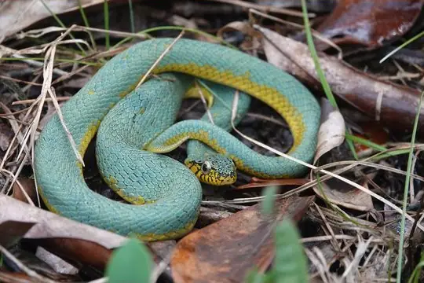
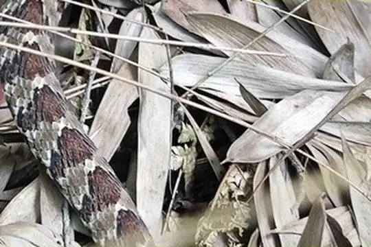
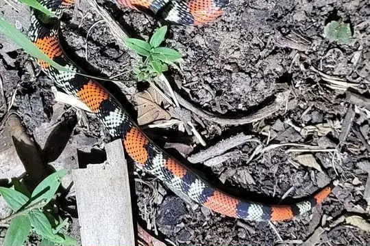
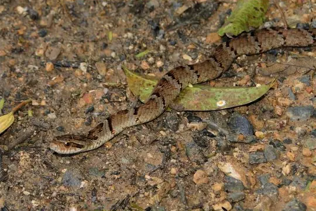

Xenodon
The genus Xenodon (family Colubridae) has 12 species in SnakeList (none venomous), recorded in 20 countries.
- 12species
- 12non-venomous
- 20countries
About the genus
A genus of the family Colubridae (colubrids).
Species
Showing 12 species
 Amazon False Fer-de-lanceXenodon severus
Amazon False Fer-de-lanceXenodon severus Banded Hognose SnakeXenodon pulcher
Banded Hognose SnakeXenodon pulcher False Fer-de-lanceXenodon rabdocephalus
False Fer-de-lanceXenodon rabdocephalus
Guianan Green SnakeXenodon werneri
Günther's False Fer-de-lanceXenodon guentheri- No photo yetJan's Hognose SnakeXenodon histricus

Mato Grosso Hognose SnakeXenodon matogrossensis Natterer's Hognose SnakeXenodon nattereri
Natterer's Hognose SnakeXenodon nattereri
Neuwied's False Fer-de-lanceXenodon neuwiedii Ringed Hognose SnakeXenodon semicinctus
Ringed Hognose SnakeXenodon semicinctus South American Hognose SnakeXenodon dorbignyi
South American Hognose SnakeXenodon dorbignyi Wagler's SnakeXenodon merremii
Wagler's SnakeXenodon merremii
No snakes in Xenodon match.